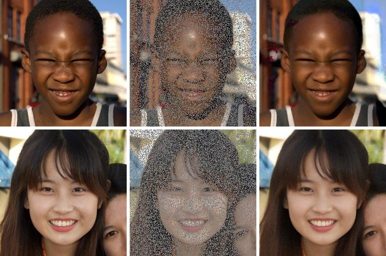

INFERENCE WALKTHROUGH / NOT A REPRODUCTION
1000 NFE 的 LPIPS，
与论文同一量级。
官方代码 + DPS 的 FFHQ 权重，SR 4× 与随机 inpainting 各两张图，默认超参（50 次 DDP 迭代 × 20 个扩散步 ≈ 1000 NFE）。平均 LPIPS 0.1305（SR）/ 0.1043（inpainting）；论文 FFHQ 4× SR 在 1000 NFE 报 0.189，本次更好，但只有两张图且图更容易。论文不报 PSNR，本页 PSNR 是走查补算的，只作参考。
跑了什么
仓库 lihenryhfl/diffusion_optimal_control @ 5d41de7，入口 inverse_sampling.py，默认求解器 optimizers/mfddp.py（matrix-free DDP，k_mf=16，AdamW lr=5e-3）。任务 SR 4× 与 random inpainting；配置里的 data.root 写的是 data/samples/，实际图在 data/，用 --data_root ./data 覆盖即可。
全部默认：num_iters=50、num_steps=20、seed=42、测量噪声高斯 σ=0.05、weight_scale=1e-6、lr=5e-3。数据是仓库自带 code/data/{0,1}.jpg（256² RGB），不训练、不评测全集。
环境与改动
原 requirements.txt 无版本约束；实际装的是 conda 前缀环境 env/、python 3.10.22、torch 2.1.2+cu118、torchvision 0.16.2，外加 numpy<2 / scipy / Pillow / matplotlib / lpips / tqdm / pyyaml / scikit-image / gdown。
权重校验：ffhq_10m.pt 为 362 项 OrderedDict、93,563,910 参数，input_blocks.0.0.weight = [128,3,3,3]，与 inverse_configs/ffhq_model_config.yaml（num_channels=128）匹配。无代码改动；另加 eval_psnr.py 复算 PSNR（仓库只打印 LPIPS）。
结果
| 任务 | 图 | PSNR（走查补算） | LPIPS |
|---|---|---|---|
| SR 4× | 0.jpg | 27.24 | 0.1453 |
| SR 4× | 1.jpg | 30.00 | 0.1157 |
| SR 4× | 平均 | — | 0.1305 |
| random inpainting | 0.jpg | 27.32 | 0.1115 |
| random inpainting | 1.jpg | 32.62 | 0.0971 |
| random inpainting | 平均 | — | 0.1043 |
SR 的测量 A·x 是 64×64，未对 y 算 PSNR；inpainting 掩码测量图 PSNR≈13.9 / 13.2，仅作参考。论文主表只报 LPIPS/FID（FFHQ 4× SR：本方法 0.171 @2500 NFE、0.189 @1000 NFE；PSLD 0.201、DPS 0.214 @1000 NFE），不报 PSNR。
耗时与显存（4090 D 单卡）：SR 两张图约 3.5 min（50 次迭代，~2.4 s/迭代），inpainting 约 4 min；峰值 3.5–3.7 GB。
样例

没跑的部分与局限
- 只跑 FFHQ 两个任务、两张图：未跑 imagenet（需另一份权重），未跑配置里的 box inpainting / motion deblur / gaussian deblur / nonlinear deblur / phase retrieval 五个任务。
- 指标不可直接对表：论文以 LPIPS/FID 为主、不报 PSNR；本次 LPIPS 更好来自两张更容易的图，不能推出「优于论文」。
- NFE 口径未核：50 次 DDP 迭代 × 20 步的实际网络前向次数与论文「1000/2500 NFE」如何对应，未逐项核对。
- 无医学数据：全部是 256² 自然图；「只要求 A 可微」的通用性没有在 MR/CT 前向模型上验证。
文件位置
| 路径 | 内容 |
|---|---|
/data1/kxchen/infer-repro/diffusion-optimal-control/code | 官方代码 @ 5d41de7 |
.../out/{super_resolution,random_inpainting}/{ref,sample,measurement}/ | 参考 / 重建 / 测量 |
.../ckpt/ffhq_10m.pt | DPS FFHQ 权重（374,417,833 B） |
.../RECORD.md | 完整走查记录与数字出处 |
.../out/atlas/*.jpg | 本页拼图 |
来源
- NeurIPS 2024 官方 proceedings 摘要页与官方仓库。
- 权重：DPS 发布的
ffhq_10m.pt（README 指向的 Google Drive 目录）。 - 本页数字全部来自
/data1/kxchen/infer-repro/diffusion-optimal-control/RECORD.md；论文 LPIPS 数字按走查记录核对。 - 明确声明：小样本推理走查，不等同论文指标。